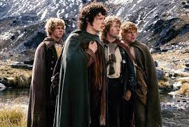
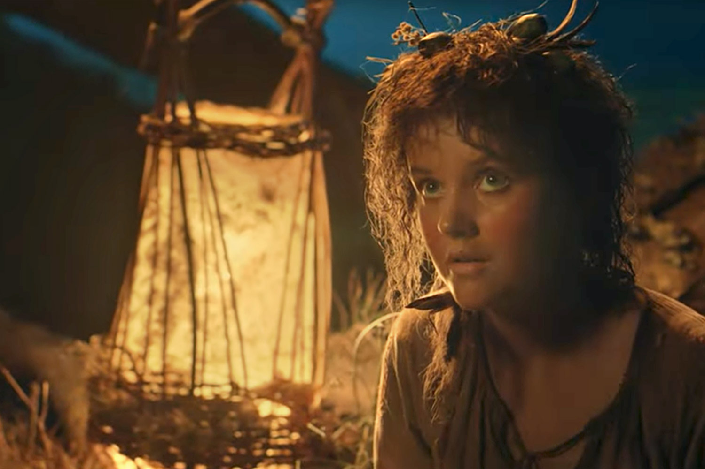
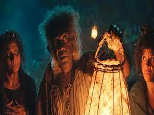

Hobbitler
  
Genellikle farklı bir ırk olarak görülen Hobbitler, İnsan ırkından bir halktır. Ayakları meşin gibidir, bu yüzden ayakkabı giymezler. Saçları genelde kıvırcıktır, boyları ise insanların normal boyundan oldukça kısadır. Hobbitlerin çoğu Shire’da ve Bree’de yaşarlar. Ataları ise bir zamanlar Anduin nehrinin kıyılarında yaşamışlardır. Çiftçilik, yemek kültürü ve sosyal yaşam gibi, içinde macera olmayan bir hayata meyillidirler. Üç gruba ayrılırlar; Kılayaklar, en kalabalık olan ve Hobbit romanında anlatılan Hobbit tasvirlerine uyan gruptur. Ülkenler, yüzmeye, sulara ve su vasıtalarına meyillidirler. Samanpostlular ise diğerlerine nazaran maceracı gruptur.
Shire

Shire ([ˈʃaɪr], [ˈʃaɪər], [ʃɜ] ya da [ʃɪə], Türkçe okunuşunda 'şayr' ya da 'şır' şeklinde telaffuz edilebilir), Birleşik Krallık'ta çoğunlukla sadece törensel önemi olan, geniş bir alanı kapsayan tarihi bölgelerden her biri.
Anglosakson döneminde shire (Eski İngilizcede scir), hundred (yüz) denen yönetim biriminin bir üst düzeyindeydi. Büyük Alfred döneminde (871-899) güneyde uygulanmaya başlayan bu yönetim biriminin Barışsever Edgar döneminde (959-975) yerleştiği sanılmaktadır. Shire'ların başında bir ealdorman ve bir shire-reeve (şerif) bulunuyordu. Norman İstilası'ndan sonra il için Fransızca county (kontluk) terimi kullanılmaya başladı ve resmî kullanımda shire'ın yerini aldı. Ama halk arasında yaygınlığını koruyan shire terimi sık sık resmî kayıtlarda da yer aldı ve Cheshire, Hampshire, Warwickshire gibi kontluk adlarında yaşamaya devam etti. Shire sözcüğü Hexhamshire gibi daha küçük bazı yerleşmelerin adlarında da bulunmaktadır.